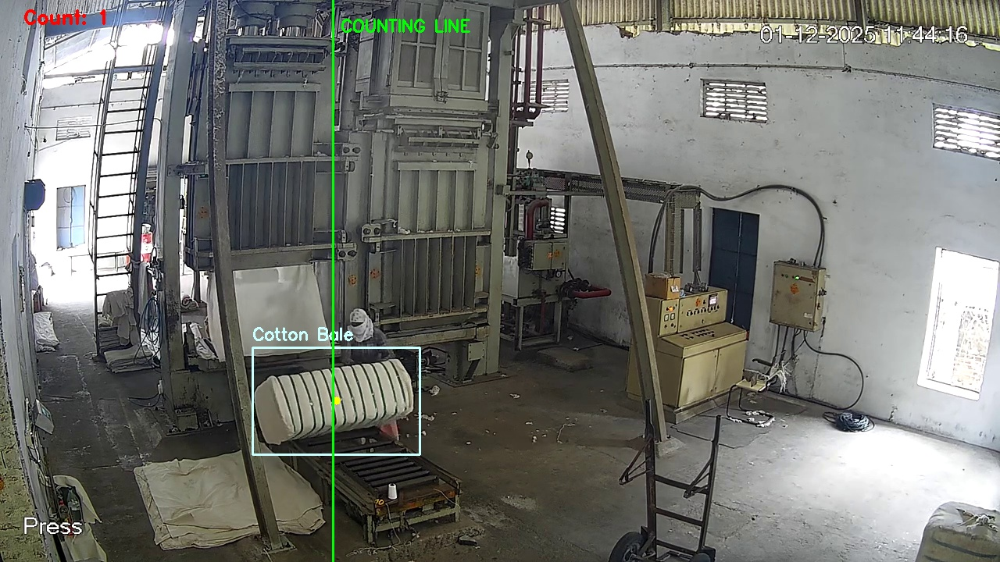

An end-to-end computer vision tracking system leveraging a fine-tuned YOLO11 model, 2D vector geometry for trajectory crossing verification, automated visual audit snapshot capture, and structured telemetry logging within a containerized CPU edge environment.
In industrial cotton ginning and processing facilities, automated tracking of packaged cotton bales is critical for throughput monitoring, inventory verification, and operational transparency. Manual logging is labor-intensive and error-prone.
This project delivered an edge-ready computer vision solution that inspects factory camera feeds, continuously identifies large dense cotton bales emerging from industrial hydraulic presses, tracks them across a conveyor section, triggers an increment on a virtual crossing boundary, and generates real-time telemetry alongside audit snapshots for local and upstream ingestion.
cotton-bale) with confidence and IoU threshold filtering. Frame-to-frame identity persistence is maintained using multi-object tracking (model.track(persist=True)).
Training data was curated from raw industrial factory footage provided by the operational team:
cotton-bale), followed by augmentation pipelines (geometric shifts, brightness perturbations) prior to model training.
The core detector is an ultralightweight YOLO11n architecture. Its small footprint enables real-time edge CPU performance without requiring high-power industrial GPUs.
Model Summary:
------------------------------------------------------------
Layers: 182
Parameters: 2,590,035 (2.59 M)
GFLOPs: 6.44
Task: Single-class Object Detection (0: cotton-bale)
Runtime Platform: CPU Edge Container (Ultralytics / OpenCV)
------------------------------------------------------------
To support tilted conveyor angles and diverse camera perspectives across facilities, the counting boundary is defined in annotation.cfg using normalized coordinates LINE_P1 and LINE_P2. Rather than using standard horizontal or vertical axis thresholds, the crossing logic calculates the signed determinant (2D cross product) of the vector from line point $P_1$ to bale centroid $P$ relative to the directional vector $P_1 \to P_2$:
side = (point.x - p1.x) * (p2.y - p1.y) - (point.y - p1.y) * (p2.x - p1.x)
When an actively tracked object transitions from a negative sign to a non-negative sign (prev_side < 0 and current_side >= 0), a forward crossing is detected. A unique tracking ID set (tracked_ids) prevents duplicate triggers if a bale pauses or decelerates on the boundary.
Recorded demonstration of the detection inference pipeline tracking cotton bales emerging from the press conveyor:
Whenever a bale triggers the crossing condition, the system performs an atomic dual-write operation: an annotated bounding-box visual snapshot and an indexed JSON payload containing hardware and location metadata.

[ Snapshot Image Placeholder ]{
"analytics": "bale_counter",
"timestamp": "20260401-00-11-43-191256",
"CameraName": "cam01",
"CustomerName": "ACME",
"Location": "FactoryA",
"LAT": 12.9716,
"LON": 77.6341,
"bale_counts": 1,
"ImageURL": "/data/logs/ACME_cam01_object_count_20260401-00-11-43-191256.jpg"
}To facilitate zero-configuration deployment across factory facilities without requiring local CUDA or Python dependency management, the application was packaged into a lightweight Docker image.
The architecture explicitly separates application logic from deployment variables via Docker volume mounting. Camera RTSP URLs, counting line coordinates, and threshold values can be reconfigured in annotation.cfg on the host machine without rebuilding the container image.
# Pull production container image from Docker Hub
docker pull rajat16127/bale_counter:v2.0
# Execute inference on edge CPU with dynamic host mounts
sudo docker run --rm \
-v /path/to/host/folder:/data \
-v /path/to/host/folder/annotation.cfg:/app/annotation.cfg \
rajat16127/bale_counter:v2.0[itms]
DETECTION_LIFETIME = 3
IOU_THRESHOLD = 0.4
ITMSWEIGHTS = /data/best.pt
RTSPSOURCE = /data/cut5.mp4
# Normalized coordinates for crossing boundary (p1 -> p2)
LINE_P1 = 0.5, 0.6
LINE_P2 = 0.3, 1.0
CAMERANAME = cam01
CUSTOMERNAME = ACME
LOCATIONNAME = FactoryA
LATITUDE = 12.9716
LONGITUDE = 77.6341
LOGDIR = /data/logs
OBJECTCONFTHRESHOLD = 0.5